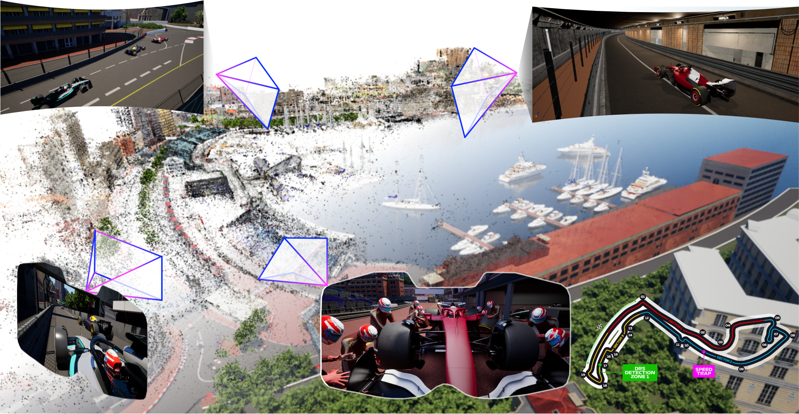

Fast 4D reconstruction for large displacement
ECCV 2026
About 820 million people follow Formula 1, and almost all of them watch through a single director-chosen camera feed. VR and AR make it possible to place a viewer anywhere in the scene instead, in the cockpit or standing trackside, but that requires reconstructing the full dynamic scene in 3D as it happens rather than after the fact. This work takes a step towards making immersive sports practical.
Reconstructing a race the way a spectator experiences it requires three properties at once: the cameras have to be outdoors, they have to be exocentric (placed around the scene apart from being mounted on the subject), and the reconstruction has to run as a stream, frame by frame, rather than on a complete recording. Prior work has each property on its own, but not the combination.
| Outdoor | Exocentric | Streaming | |
|---|---|---|---|
| Most 4D reconstruction works | ✕ | ✓ | ✓ |
| Outdoor datasets (driving) | ✓ | ✕ | ✕ |
| Offline outdoor / sports FVV | ✓ | ✓ | ✕ |
| Monaco4D + FastFlowGS | ✓ | ✓ | ✓ |
FastFlowGS closes the method gap. Monaco4D addresses the data gap.

Given multi-view video streams, FastFlowGS reconstructs geometry for high fidelity, photorealistic free-view rendering.
Filmed laterally at 30 Hz, a Formula 1 car moves 200 to 400 pixels between consecutive frames. Off-the-shelf optical flow and point tracking methods are typically evaluated at displacements an order of magnitude smaller than this. FastFlowGS uses these trackers as they are, without modification. The difficulty is that at this scale, a large fraction of the per-frame correspondences they produce become unreliable. In our experiments, every existing streaming 4D reconstruction method we tested diverges at this scale within the first few frames as none were built to survive displacements this large.
The standard way to advance a dynamic Gaussian to the next frame is to finetune its parameters directly against the new images. That optimization is expensive, and at these displacements it is also unreliable as the optimizer has to search too far from the Gaussian's previous position to converge consistently, which is part of why existing methods degrade or diverge under this much motion.
FastFlowGS instead moves each Gaussian to a rough estimate of its new position before finetuning starts. That estimate is cheap to compute because it comes from tracking pixels and triangulating their motion. Because the Gaussian already starts close to where it needs to end up, only a short finetuning pass is needed to correct it. Tracking pixels, triangulating their motion, and combining several trackers, described next, all exist to make this warm start as accurate as possible.
We associate each dynamic Gaussian with the pixels it contributes to, in every camera view. To move it from one frame to the next, those pixels are tracked forward in time by a correspondence method (GMFlow, DOT, LoFTR), and the resulting 2D motion is triangulated across views into a 3D displacement that updates the Gaussian's position.
Map each Gaussian to the pixels it renders through, in every view.
Track those pixels forward in time.
Triangulate the resulting 2D motion into a 3D displacement.
Update the Gaussian's position by that displacement.
We find that a single correspondence method is not reliable on its own. Sparse feature matching struggles on the reflective bodywork of a race car. Dense optical flow struggles near occlusion boundaries, for example when one car passes another. Point trackers work well for occlusion but fail in low texture areas. FastFlowGS runs several trackers in parallel and combines their estimates for each Gaussian, weighting each one by how geometrically certain its triangulation is and by how much it agrees with the other trackers. The combined estimate is then merged with a prediction carried over from the previous frame, using a Kalman-style update. The result is the warm start for that Gaussian, so the finetuning pass that follows only has to correct minor errors left.
Per-tracker 3D estimates for each Gaussian, combined by triangulation certainty and cross-tracker agreement.
FastFlowGS leads every baseline on every metric, and holds temporal drift near zero, where baselines lose more than 1 dB per sequence.
+12.6% VMAF at 35% greater efficiency
Every streaming baseline loses most of its Gaussians by frame 2 unless hand-tuned per sequence. FastFlowGS is the only method that produces a coherent reconstruction.
+18.6% dynamic-region PSNR at 28.3% lower per-frame time
Trackside, onboard, and drone captures across five lighting conditions, with dense scene-flow ground truth. Described in full on the dataset page.
Citation available upon publication.